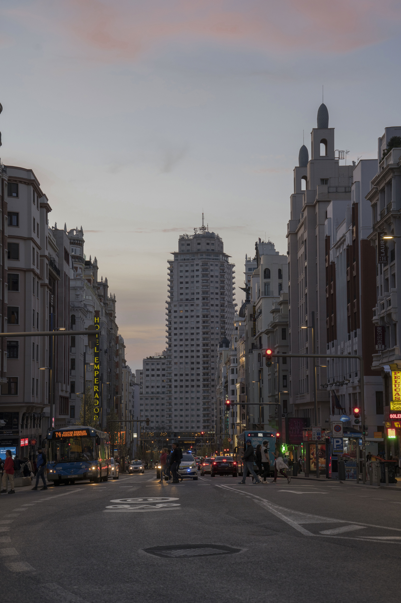

Seguir a Jesús
Conocer su vida, escuchar sus enseñanzas y aprender a amar como Él nos amó.
Juan 13:34-35 ↗IGLESIA DE CRISTO EN MADRID
Una comunidad para conocer a Jesús, aprender de la Biblia y compartir la vida. Hay un lugar para ti.
Nos reunimos los domingos a las 10:30.

CUÁNDODomingos, 10:30
DÓNDEPaseo de Ginebra 35, local 2
EN METROLas Rosas
LA COMUNIDAD
En medio del ritmo de Madrid, nos reunimos para volver a lo esencial: Jesús, su Palabra y el amor al prójimo.
Somos cristianos que buscamos seguir el Camino de Jesucristo y el ejemplo de la iglesia del primer siglo que encontramos en el Nuevo Testamento. Queremos crecer en la fe y animarnos unos a otros.
Vivas aquí o estés de paso, conozcas la Biblia o tengas tus primeras preguntas, eres bienvenido.
Prepara tu primera visitaNUESTRA FE
Buscamos una fe arraigada en las Escrituras y presente en la vida cotidiana.
Conocer su vida, escuchar sus enseñanzas y aprender a amar como Él nos amó.
Juan 13:34-35 ↗Leer la Biblia, hacer preguntas y dejar que su mensaje dé forma a lo que creemos y a cómo vivimos.
2 Timoteo 3:16-17 ↗Compartir la fe, orar y animarnos a vivir con amor, esperanza y buenas obras.
Hebreos 10:24-25 ↗El libro de Hechos llama «el Camino» a la fe que seguían los primeros cristianos. Esa es la invitación que queremos vivir: seguir a Jesús.
Hechos 24:14 ↗CÓMO ADORAMOS
Jesús nos enseña a adorar al Padre en espíritu y en verdad. Sus palabras y la enseñanza y el ejemplo de la iglesia del primer siglo guían nuestra adoración juntos.
Juan 4:23-24 ↗Los primeros cristianos perseveraban en la enseñanza de los apóstoles. Leemos y estudiamos la Biblia para que su mensaje guíe nuestra fe y nuestra vida, y para crecer juntos en el conocimiento de Dios.
La oración formaba parte de la vida de la primera iglesia. Damos gracias a Dios, presentamos nuestras necesidades y oramos unos por otros, buscando una vida de oración constante.
Cantamos juntos a cappella, sin instrumentos. Buscamos seguir la enseñanza del Nuevo Testamento de alabar a Dios con el corazón y enseñarnos y animarnos unos a otros mediante salmos, himnos y cánticos espirituales.
Compartimos la Cena del Señor cada domingo, siguiendo el ejemplo de los discípulos que se reunían el primer día de la semana para partir el pan. Con el pan y la copa recordamos la entrega de Jesús, anunciamos su muerte y nos examinamos a nosotros mismos.
Pablo indicó a las iglesias que apartaran sus ofrendas el primer día de la semana para ayudar a los creyentes necesitados. Su enseñanza guía nuestra ofrenda: una decisión personal, generosa y sin presión. No se espera que los visitantes hagan una aportación.
Nos reunimos para animarnos al amor y a las buenas obras. Queremos que la adoración fortalezca a la comunidad y que todo se haga de manera respetuosa y ordenada, para la edificación de todos.
Selecciona una referencia bíblica para leer el pasaje completo.
TU PRIMERA VISITA
No necesitas tener todas las respuestas. Ven a escuchar, aprender y conocer a la comunidad.
Abrir en Google MapsLocal 2 · Madrid, España
CÓMO LLEGAR
Estas son las indicaciones para llegar al local desde la estación.
METRO DE MADRID · LÍNEA 2
Viaja en la línea 2 y baja en Las Rosas.
SALIDA DE LA ESTACIÓN
Al salir, ve a la calle que está detrás del ascensor.
NUESTRO LUGAR DE REUNIÓN
Si necesitas ayuda para encontrar el local, llama a Ángel al +34 660 00 76 73.
ANTES DE VENIR
No. Somos una Iglesia de Cristo: una comunidad de cristianos que busca seguir el Camino de Jesucristo y las enseñanzas y la práctica de la iglesia del primer siglo, tal como se recogen en el Nuevo Testamento. La Biblia es nuestra guía. Respetamos a nuestros vecinos de otras tradiciones.
Cantamos a cappella, oramos, aprendemos de las Escrituras, compartimos la Cena del Señor y damos voluntariamente. Consulta cómo adoramos y los pasajes que nos guían ↗.
No. Puedes venir a conocer a la comunidad y aprender con nosotros, aunque sea tu primera visita a una iglesia.
Sí. Ven con tus preguntas y con ganas de escuchar. No hace falta tener conocimientos previos.
El culto comienza los domingos a las 10:30, hora de Madrid, en Paseo de Ginebra 35, local 2. La parada de metro es Las Rosas, línea 2.
Sí. Usa el selector ES / EN para leer esta web en inglés. Para consultar el idioma de las reuniones o la posibilidad de interpretación, ponte en contacto con Ángel.
HABLEMOS
Si necesitas indicaciones o quieres saber más antes de venir, ponte en contacto con Ángel.